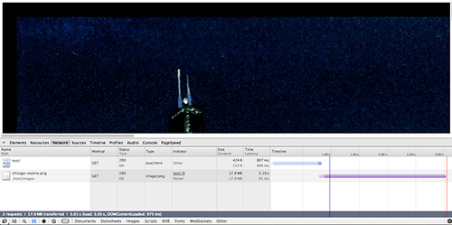

Description
Image Cache is a tiny PHP class that accepts a .png, .jpg, or .gif image then compresses, moves, and caches the image in the user's browser. It then returns the new source of the image to be printed in an image tag.
By compressing and caching images, page load time can be dramatically decreased. Page load time is one of the biggest factors in user retention and we've all seen the studies on how load time affects a companies bottom line. However, when trying to calculate for these factors I was hard pressed to find a simple and direct PHP class to cache and load images. So I made one.
Here's an example of the difference that this class can make. Below, on the left, is a screenshot of a large .png file on a local test environment being loaded in 2.19 seconds. On the right is the screenshot taken after the script was run and the image was compressed and cached, being loaded within 23 milliseconds. As a result of the script, image load time was reduced by 2167 milliseconds – that's a 98.95% reduction in resource load time!
Click on these little guys for more details:
-

Before the script was run

After the script was run
Basic Usage
The class is pretty small, and very basic. First, include the file and initialize the class:
require_once 'ImageCache.php'; $imagecache = new ImageCache();
Note: if you're loading with composer, you'll call autoload.php, but you probably don't need to be told that.
Optional: Set the location of the directory to house your cached images:
$imagecache->cached_image_directory = dirname(__FILE__) . '/images/cached';
Setting this variable is an option, but if left unset, it'll create a subdirectory in the same folder you're calling the script from, called 'php-image-cache'. I don't know about you, but I don't keep my PHP scripts in the same folder as my images.
Next, reference the image that you want compressed and store the new image source in a variable. Echo this variable within the 'src' attribute of an image tag:
$cached_src = $imagecache->cache( 'images/unsplash1.jpeg' ); ///
For full usage, see the examples and demos provided.
Installation
You can either install the script manually using the require method:
require 'ImageCache.php';
Or (preferred) you can install the script with Composer.
Install Composer in the root directory of your project, and create a composer.json file.
In your composer.json file:
{
"require" : {
"nielse63/phpimagecache": "dev-master"
}
}
This is currently the first release of Image Cache, so in this example you'll be able to update your script with any updates made to Image Cache. If, however, you don't want access to any potential updates, remove the tilda form the "version" value.
Navigate to your project root and run the install command of composer.phar.
$ php composer.phar install
From there, include the autoload.php file in your project, and initilize the class as normal.
Contributing
Contributing to the project would be a massive help in maintaining and extending the script. It has a lot of potential, and any help would be awesome.
If you're interested in contributing, issue a pull request on Github or email me directly at erik@312development.com.